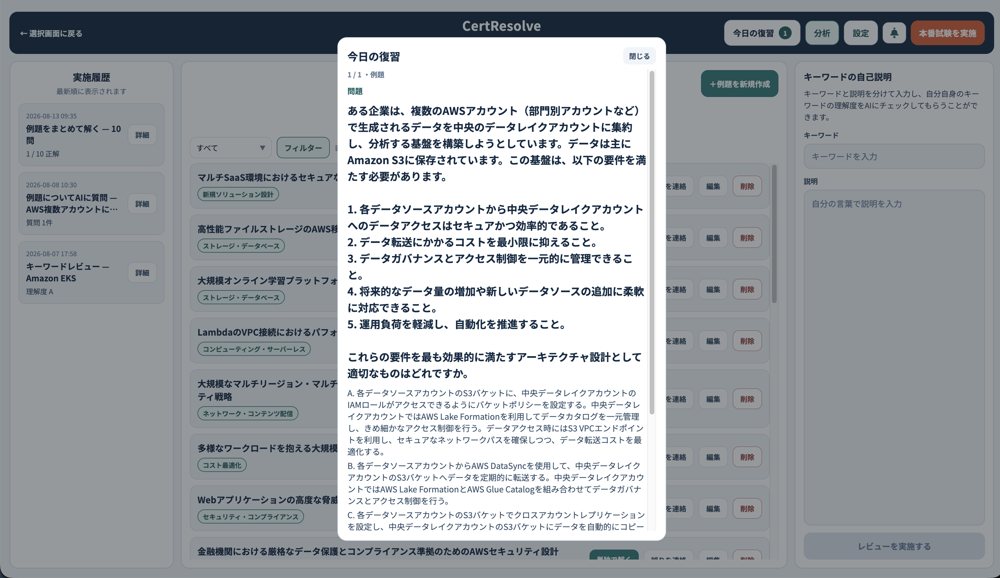

A
AI指摘 → 追加
間隔反復（エビングハウスの忘却曲線）に基づく復習
Ankiのような分散学習です。一度説明できたキーワードや解いた例題も、忘れる前提で「3日後」「1週間後」などに自動で再テストします。ヘッダーの「今日の復習」から開始します。
なぜ追加したか
「自力説明」や「逆引き問題」をやっても、人間はすぐ忘れる。再テストの仕組みがないと実用的な定着に結びつきにくい、という指摘への対応です。

画面イメージ｜「今日の復習」モーダル（件数バッジから開く）